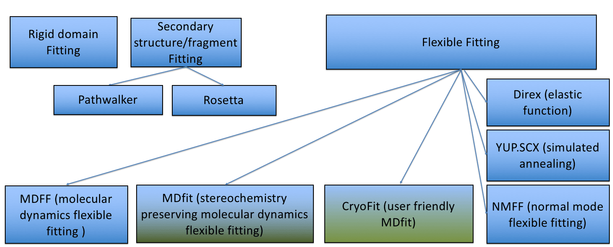
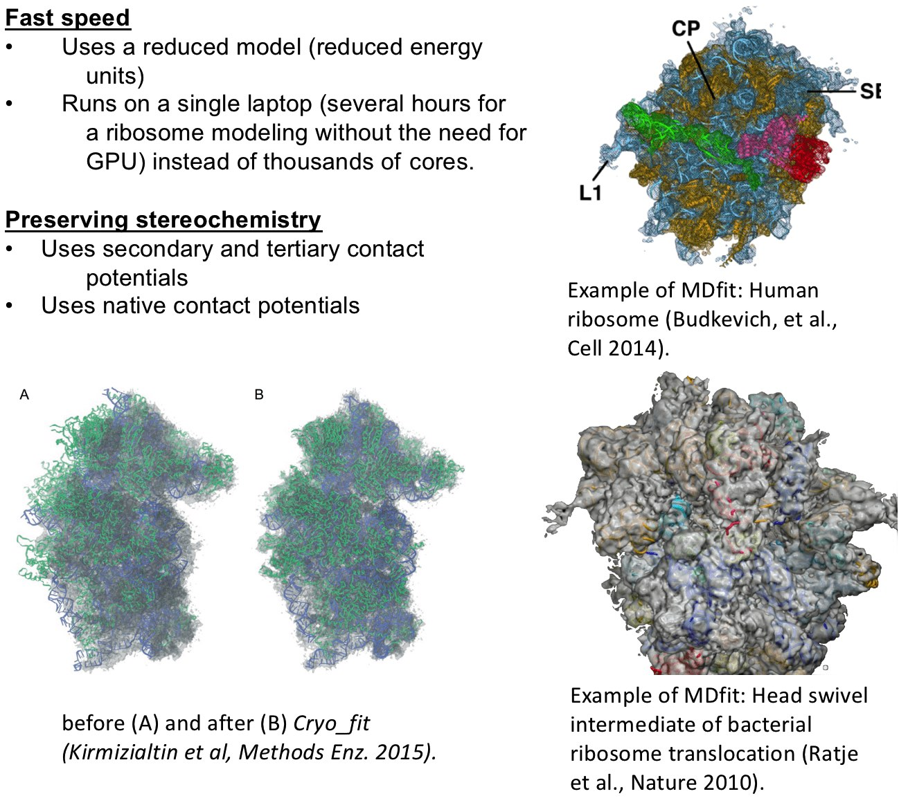
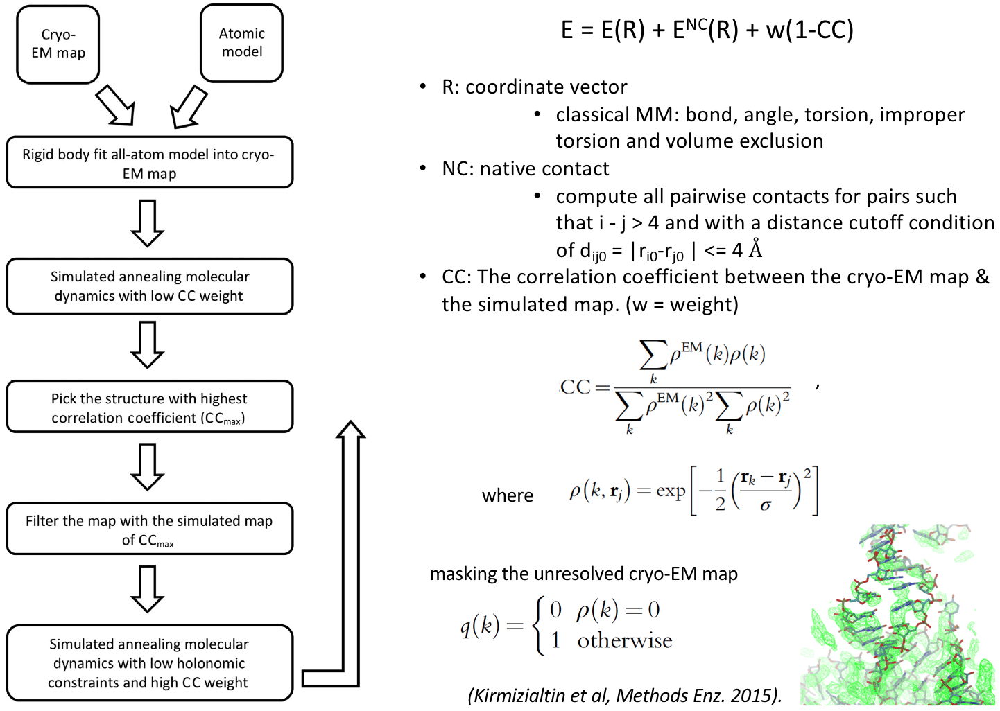

Cryo_fit fits biomolecular (protein and nucleic acids) structures to cryo-EM maps using molecular dynamics (MD) simulation.
Cryo_fit is an automated cryo-EM density fitting program using MD simulation to guide models into maps. Cryo_fit produces all-atom models highly consistent with the EM density and is being used to optimize models for many functional molecular complexes including one of the first all-atom models of the human ribosome revealing the 'subunit rolling' mechnism unique to eukaryotic ribosomes. Two key advantages of Cryo_fit are: speed and stereochemistry preservation. Its fast speed allows reseachers to optimize ribosome structures on a laptop instead of the need of a computing server with thousands of CPU/GPU cores. It uses a reduced model molecular dynamics potential allowing the preservation of stereochemistry information. In addition, secondary and tertiary contact potentials can be specified to place additional restraints on contacts to keep molecules intact during the fitting process.



See the cryo_fit FAQ